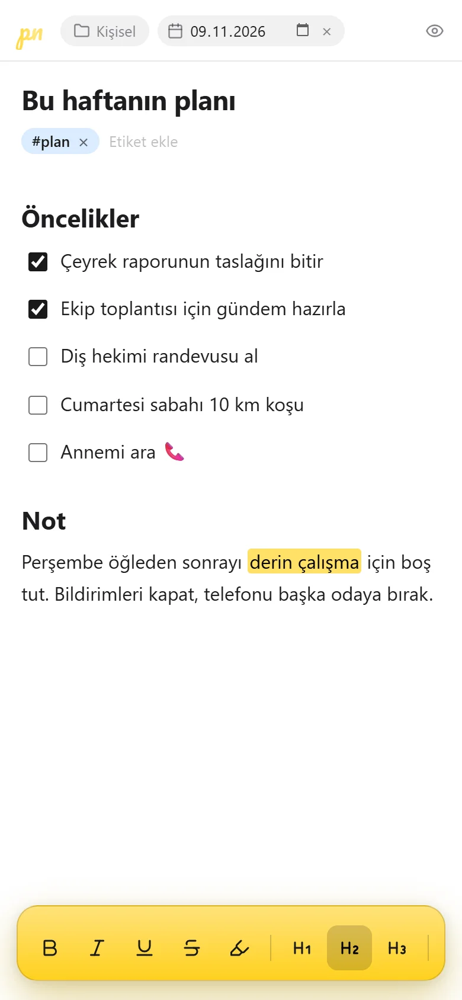
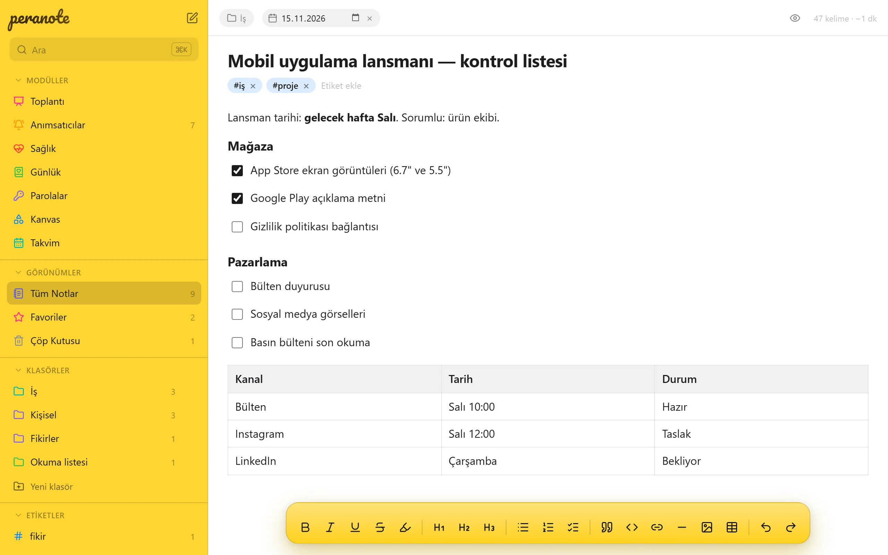

01 · Notlar
Yazarken düzen kendiliğinden gelir.
Başlık, görev listesi, tablo, renklendirilmiş kod, alıntı, görsel. Aklınızdakini yazın; biçimi alttaki araç çubuğu ya da / menüsü halletsin. Not otomatik kaydedilir.
- / menüsü: başlık, liste, onay kutusu, tablo, kod bloğu, alıntı tek tuşla
- Ctrl K komut paleti: notlar, klasörler ve etiketler arasında anında geçiş
- Klasör, etiket, sabitleme, favori ve tarih; tarihli not takvime düşer
- Gizli mod: yalnızca imlecin olduğu satır net, gerisi bulanık. Yanınızdaki okuyamaz
- Hazır şablonlar: yapılacaklar, toplantı notu, günlük
- Notu Markdown ya da düz metin olarak indirme, e-postayla ya da paylaşım menüsüyle gönderme

